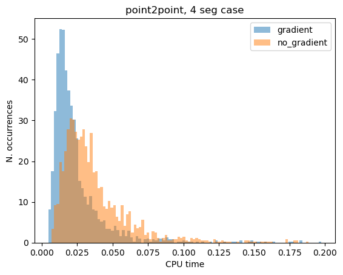

Planet to planet low-thrust transfer#
In this tutorial we show the use of the pykep.trajopt.direct_pl2pl to find a low-thrust trajectory connecting two moving planets.
The decision vector in this class compatible with [BI20] UDPs (User Defined Problems) is:
\[
\mathbf x = [t_0, m_f, V_{sx}^\infty, V^\infty_{sy}, V^\infty_{sz}, V^\infty_{fx}, V^\infty_{fy}, V^\infty_{fz}, u_{x0}, u_{y0}, u_{z0}, u_{x1}, u_{y1}, u_{z1}, ..., T_{tof}]
\]
containing the starting epoch \(t_0\) as a MJD2000, the final mass \(m_f\) as well as the starting and final \(V^{\infty}\), throttles and the time-of-flight \(T_{tof}\).
Note
This notebook makes use of the commercial solver SNOPT 7 and to run needs a valid snopt_7_c library installed in the system. In case SNOPT7 is not available, you can still run the notebook using, for example uda = pg.algorithm.nlopt("slsqp") with minor modifications.
Basic imports:
import pykep as _pk
import numpy as _np
import time
import pygmo as pg
import pygmo_plugins_nonfree as ppnf
import time
from matplotlib import pyplot as plt
import numpy as _np
import pykep as _pk
earth = _pk.planet(_pk.udpla.jpl_lp(body="EARTH"))
mars = _pk.planet(_pk.udpla.jpl_lp(body="MARS"))
class direct_pl2pl:
"""Represents the optimal low-thrust transfer between two :class:`~pykep.planet` using a direct method.
This problem works internally using the :class:`~pykep.leg.sims_flanagan` and manipulates its initial and final states, as well as its transfer time T, final mass mf
and the controls as to link the two planets with a low-thrust trajectory.
It can be used to better profile and understand performances of optimizers on this type of direct approach, but has a limited use
in the design of interplanetary trajectories as per the fixed point limitation.
The decision vector is::
z = [t0, mf, Vsx, Vsy, Vsz, Vfx, Vfy, Vfz, throttles, tof]
where throttles is a vector of throttles structures as [u0x, u0y,u0z, ...]
"""
def __init__(
self,
pls=earth,
plf=mars,
ms=1000,
max_thrust=0.12,
isp=3000,
t0_bounds=[4000, 5000],
tof_bounds=[80, 400],
mf_bounds=[200.0, 1000.0],
vinf_dep=1e-3,
vinf_arr=1e-3,
nseg=10,
cut=0.6,
mass_scaling=1000,
r_scaling=_pk.AU,
v_scaling=_pk.EARTH_VELOCITY,
with_gradient=False,
):
"""
Initializes the direct_pl2pl instance with given parameters.
Args:
*rvs* (:class:`list`): Initial position and velocity vectors. Defaults to two vectors scaled by :class:`~pykep.AU` and Earth's velocity.
*rvf* (:class:`list`): Final position and velocity vectors. Defaults to two vectors scaled by :class:`~pykep.AU` and Earth's velocity.
*ms* (:class:`float`): Initial spacecraft mass in kg. Defaults to 1000 kg.
*mu* (:class:`float`): Gravitational parameter, default is for the Sun (:class:`~pykep.MU_SUN`).
*max_thrust* (:class:`float`): Maximum thrust in Newtons. Defaults to 0.12 N.
*isp* (:class:`float`): Specific impulse in seconds. Defaults to 3000 s.
*t0_bounds* (:class:`list`): Bounds for departure epoch in MJD2000. Defaults to [4000, 5000] days.
*tof_bounds* (:class:`list`): Bounds for time of flight in days. Defaults to [0, 400] days.
*mf_bounds* (:class:`list`): Bounds for final mass in kg. Defaults to [200.0, 1000.0] kg.
*vinf_dep* (:class:`float`): Allowed magnitude for the departure's relative velocity in km/s. Defaults to 1e-3.
*vinf_arr* (:class:`float`): Allowed magnitude for the arrival's relative velocity in km/s. Defaults to 1e-3.
*nseg* (:class:`int`): Number of segments for the trajectory. Defaults to 10.
*cut* (:class:`float`): Cut parameter for the :class:`~pykep.leg.sims_flanagan`. Defaults to 0.6.
*mass_scaling* (:class:`float`): Scaling factor for mass (used to scale constraints). Defaults to 1000.
*r_scaling* (:class:`float`): Scaling factor for distance, (used to scale constraints). Defaults AU (:class:`~pykep.AU`).
*v_scaling* (:class:`float`): Scaling factor for velocity (used to scale constraints). Defaults the Earth's velocity (:class:`~pykep.EARTH_VELOCITY`).
*with_gradient* (:class:`bool`): Indicates if gradient information should be used. Defaults True.
"""
# We add as data member one single Sims-Flanagan leg using the problem data
# and some temporary (and unused, thus irrelelvant) values for the to-be-optimzed parameters throttles, tof and mf.
throttles = _np.random.uniform(-1, 1, size=(nseg * 3))
self.leg = _pk.leg.sims_flanagan(
rvs=rvs,
ms=ms,
throttles=throttles,
rvf=rvf,
mf=_np.mean(mf_bounds),
tof=_np.mean(tof_bounds) * _pk.DAY2SEC,
max_thrust=max_thrust,
isp=isp,
mu=mu,
cut=cut,
)
self.tof_bounds = tof_bounds
self.mf_bounds = mf_bounds
self.mass_scaling = mass_scaling
self.r_scaling = r_scaling
self.v_scaling = v_scaling
self.with_gradient = with_gradient
def get_bounds(self):
lb = [self.mf_bounds[0]] + [-1, -1, -1] * self.leg.nseg + [self.tof_bounds[0]]
ub = [self.mf_bounds[1]] + [1, 1, 1] * self.leg.nseg + [self.tof_bounds[1]]
return (lb, ub)
def _set_leg_from_x(self, x):
# We set the leg using data in the decision vector
self.leg.tof = x[-1] * _pk.DAY2SEC
self.leg.mf = x[0]
self.leg.throttles = x[1:-1]
def fitness(self, x):
# 1 - We set the leg using data in the decision vector
self._set_leg_from_x(x)
obj = -x[0] / self.mass_scaling
# 2 - We compute the constraints violations (mismatch+throttle)
ceq = self.leg.compute_mismatch_constraints()
cineq = self.leg.compute_throttle_constraints()
retval = _np.array([obj] + ceq + cineq) # here we can sum lists
# 3 - We scale the values in nd units (numerical solvers are sensitive to well-scaled values)
retval[1:4] /= self.r_scaling
retval[4:7] /= self.v_scaling
retval[7] /= self.mass_scaling
return retval
def has_gradient(self):
return self.with_gradient
def gradient(self, x):
self._set_leg_from_x(x)
_, mcg_xf, mcg_th_tof = self.leg.compute_mc_grad()
tcg_th = self.leg.compute_tc_grad()
# 1 - The gradient of the objective function (obj = -mf)
retval = [-1.0 / self.mass_scaling]
# 2 - The gradient of the mismatch contraints (mcg). We divide them in pos, vel mass as they have different scaling units
# pos
for i in range(3):
# First w.r.t. mf
retval.append(mcg_xf[i, -1] / self.r_scaling)
# Then the [throttles, tof]
retval.extend(mcg_th_tof[i, :] / self.r_scaling)
retval[-1] *= _pk.DAY2SEC
# vel
for i in range(3, 6):
# First w.r.t. mf
retval.append(mcg_xf[i, -1] / self.v_scaling)
# Then the [throttles, tof]
retval.extend(mcg_th_tof[i, :] / self.v_scaling)
retval[-1] *= _pk.DAY2SEC
# mass
for i in range(6, 7):
# First w.r.t. mf
retval.append(mcg_xf[i, -1] / self.mass_scaling)
# Then the [throttles, tof]
retval.extend(mcg_th_tof[i, :] / self.mass_scaling)
retval[-1] *= _pk.DAY2SEC
# 3 - The gradient of the throttle constraints
for i in range(self.leg.nseg):
retval.extend(tcg_th[i, 3 * i : 3 * i + 3])
return retval
def gradient_sparsity(self):
dim = 2 + 3 * self.leg.nseg
# The objective function only depends on the final mass, which is in the chromosome.
retval = [[0, 0]]
# The mismatch constraints depend on all variables.
for i in range(1, 8):
for j in range(dim):
retval.append([i, j])
# The throttle constraints only depend on the specific throttles (3).
for i in range(self.leg.nseg):
retval.append([8 + i, 3 * i + 1])
retval.append([8 + i, 3 * i + 2])
retval.append([8 + i, 3 * i + 3])
# We return the sparsity pattern
return retval
def get_nec(self):
return 7
def get_nic(self):
return self.leg.nseg
def pretty(self, x):
"""
Prints a detailed representation of the Point to point problem.
Args:
*x* (:class:`list`): The decision vector containing final mass, thrust direction, and time of flight.
"""
self._set_leg_from_x(x)
print(self.leg)
def plot(
self,
x,
ax=None,
units=_pk.AU,
show_midpoints=False,
show_gridpoints=False,
show_throttles=False,
length=0.1,
arrow_length_ratio=0.05,
**kwargs
):
"""
Plots the trajectory leg 3D axes.
Args:
*x* (:class:`list`): The decision vector containing final mass, thrust direction, and time of flight.
*ax* (:class:`mpl_toolkits.mplot3d.axes3d.Axes3D`, optional): The 3D axis to plot on. Defaults to None.
*units* (:class:`float`, optional): The unit scale for the plot. Defaults to _pk.AU.
*show_midpoints* (:class:`bool`, optional): Whether to show midpoints on the trajectory. Defaults to False.
*show_gridpoints* (:class:`bool`, optional): Whether to show grid points on the trajectory. Defaults to False.
*show_throttles* (:class:`bool`, optional): Whether to show throttle vectors. Defaults to False.
*length* (:class:`float`, optional): Length of the throttle vectors. Defaults to 0.1.
*arrow_length_ratio* (:class:`float`, optional): Arrow length ratio for the throttle vectors. Defaults to 0.05.
*\*\*kwargs*: Additional keyword arguments for the plot.
Returns:
:class:`mpl_toolkits.mplot3d.axes3d.Axes3D`: The 3D axis with the plotted trajectory.
"""
self._set_leg_from_x(x)
sf = self.leg
# Making the axis
if ax is None:
ax = _pk.plot.make_3Daxis(figsize=(7, 7))
rs, _ = sf.rvs
rf, _ = sf.rvf
ax.scatter(rs[0] / _pk.AU, rs[1] / units, rs[2] / units, c="k", s=20)
ax.scatter(rf[0] / _pk.AU, rf[1] / units, rf[2] / units, c="k", s=20)
# Plotting the trajctory leg
ax = _pk.plot.add_sf_leg(
ax,
sf,
units=units,
show_throttles=show_throttles,
length=length,
show_gridpoints=show_gridpoints,
show_midpoints=show_midpoints,
arrow_length_ratio=arrow_length_ratio,
**kwargs
)
return ax
# Problem data
mu = pk.MU_SUN
max_thrust = 0.12
isp = 3000
# Initial state
ms = 1500.0
rs = np.array([1.2, 0.0, -0.01]) * pk.AU
vs = np.array([0.01, 1, -0.01]) * pk.EARTH_VELOCITY
# Final state
mf = 1300.0
rf = np.array([1, 0.0, -0.0]) * pk.AU
vf = np.array([0.01, 1.1, -0.0]) * pk.EARTH_VELOCITY
# Throttles and tof
nseg = 4
throttles = np.random.uniform(-1, 1, size=(nseg * 3))
tof = 2 * np.pi * np.sqrt(pk.AU**3 / pk.MU_SUN) / 4
udp_nog = pk.trajopt.direct_point2point(
rvs=[rs, vs],
rvf=[rf, vf],
mu=pk.MU_SUN,
max_thrust=0.22,
isp=3000,
tof_bounds=[200, 500],
mf_bounds=[200.0, 1000.0],
nseg=nseg,
cut=0.6,
with_gradient=False,
)
udp_g = pk.trajopt.direct_point2point(
rvs=[rs, vs],
rvf=[rf, vf],
mu=pk.MU_SUN,
max_thrust=0.22,
isp=3000,
tof_bounds=[200, 500],
mf_bounds=[200.0, 1000.0],
nseg=nseg,
cut=0.6,
with_gradient=True,
)
---------------------------------------------------------------------------
NameError Traceback (most recent call last)
Cell In[3], line 2
1 # Problem data
----> 2 mu = pk.MU_SUN
3 max_thrust = 0.12
4 isp = 3000
NameError: name 'pk' is not defined
snopt72 = "/usr/local/lib/libsnopt7_c.so"
uda = ppnf.snopt7(library=snopt72, minor_version=2, screen_output=False)
uda.set_integer_option("Major iterations limit", 2000)
uda.set_integer_option("Iterations limit", 20000)
uda.set_numeric_option("Major optimality tolerance", 1e-3)
uda.set_numeric_option("Major feasibility tolerance", 1e-12)
# uda = pg.nlopt("slsqp")
algo = pg.algorithm(uda)
prob_nog = pg.problem(udp_nog)
prob_nog.c_tol = 1e-6
prob_g = pg.problem(udp_g)
prob_g.c_tol = 1e-6
pop_g = pg.population(prob_g, 1)
pop_g = algo.evolve(pop_g)
print(prob_g.feasibility_f(pop_g.champion_f))
True
ax = udp_nog.plot(pop_g.get_x()[0], show_gridpoints=True)
ax.view_init(90, 0)
Mismatch on pos: [ 1.57696078e-12 1.61709535e-12 -1.75156764e-13]
Mismatch on mass: 4.126786734559573e-08
from tqdm import tqdm
cpu_nog = []
cpu_g = []
fail_g = 0
fail_nog = 0
for i in tqdm(range(2000)):
pop_nog = pg.population(prob_nog, 1)
pop_g = pg.population(prob_g)
pop_g.push_back(pop_nog.get_x()[0])
start = time.time()
pop_g = algo.evolve(pop_g)
end = time.time()
cpu_g.append(end - start)
if not prob_g.feasibility_f(pop_g.champion_f):
fail_g += 1
start = time.time()
pop_nog = algo.evolve(pop_nog)
end = time.time()
cpu_nog.append(end - start)
if not prob_nog.feasibility_f(pop_nog.champion_f):
fail_nog += 1
print(f"Gradient: {np.median(cpu_g):.4e}s")
print(f"No Gradient: {np.median(cpu_nog):.4e}s")
print(f"\nGradient (n.fails): {fail_g}")
print(f"No Gradient (n.fails): {fail_nog}")
100%|██████████| 2000/2000 [02:18<00:00, 14.45it/s]
Gradient: 1.8443e-02s
No Gradient: 3.0552e-02s
Gradient: 192
No Gradient: 188
cpu_g = np.array(cpu_g)
cpu_nog = np.array(cpu_nog)
plt.hist(cpu_g[cpu_g < 0.2], bins=100, label="gradient", density=True, alpha=0.5)
plt.hist(cpu_nog[cpu_nog < 0.2], bins=100, label="no_gradient", density=True, alpha=0.5)
# plt.xlim([0,0.15])
plt.legend()
plt.title("point2point, 4 seg case")
plt.xlabel("CPU time")
plt.ylabel("N. occurrences")
